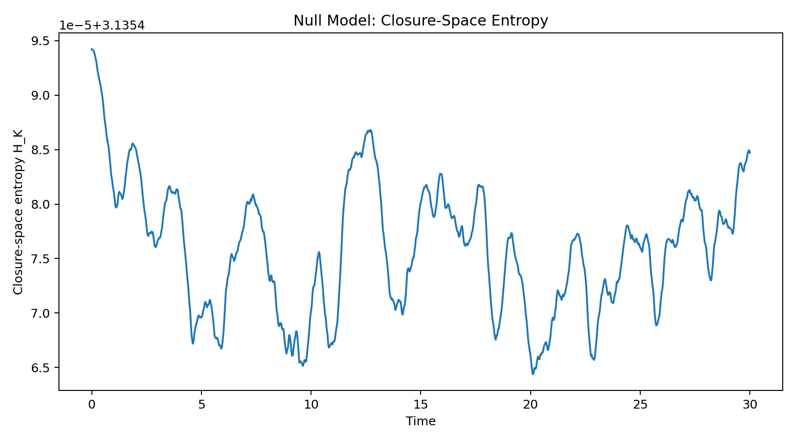

| run | seed | selected_k |
|---|---|---|
| 0 | 3915088655 | 10 |
| 1 | 3871593120 | 7 |
| 2 | 1347626746 | 24 |
| 3 | 1149122395 | 24 |
Preview only — rows truncated. Open full file
Entry 01
Null-model baseline for closure-sector dynamics.
Purpose This script establishes the unbiased control experiment before any EDF-specific closure functional B_k is introduced.